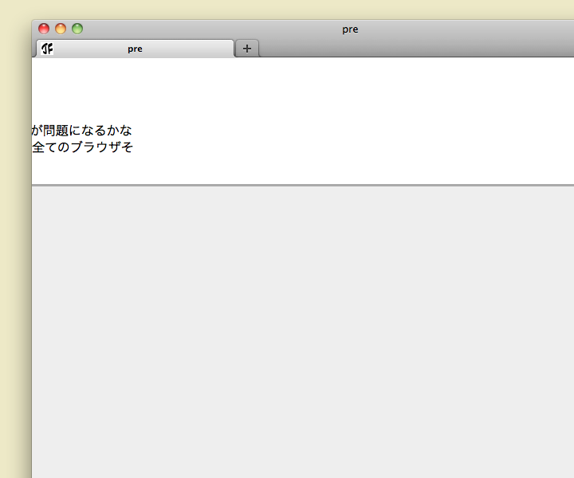

テスト2
pre の背景をウィンドウ幅いっぱいに広げる見本2。body に overflow-x: hidden; を追加してみたけど、確かにこれで横方向のスクロールバーは出なくなるが、実際にはマウスホイールやカーソルキーでスクロールは出来てしまう。
body {
margin: 0;
padding: 0;
width: 100%;
overflow-x: hidden;
}
#content {
margin: 0 auto;
width: 720px;
}
pre {
margin: 0 -10000px;
padding: 0 10000px;
border-top: 3px #aaa solid;
border-bottom: 3px #aaa solid;
background-color: #ddd;
color: #666;
}このコードだとこうなっちゃうっていう見本画像。Mac Firefox 4 のスクリーンショット。
